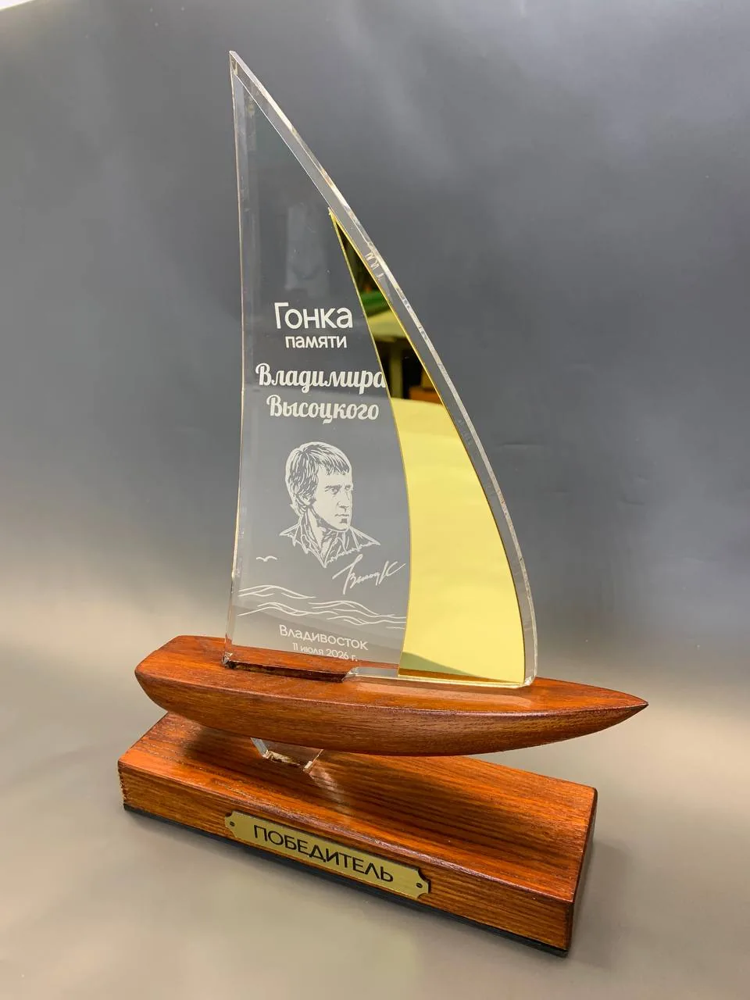
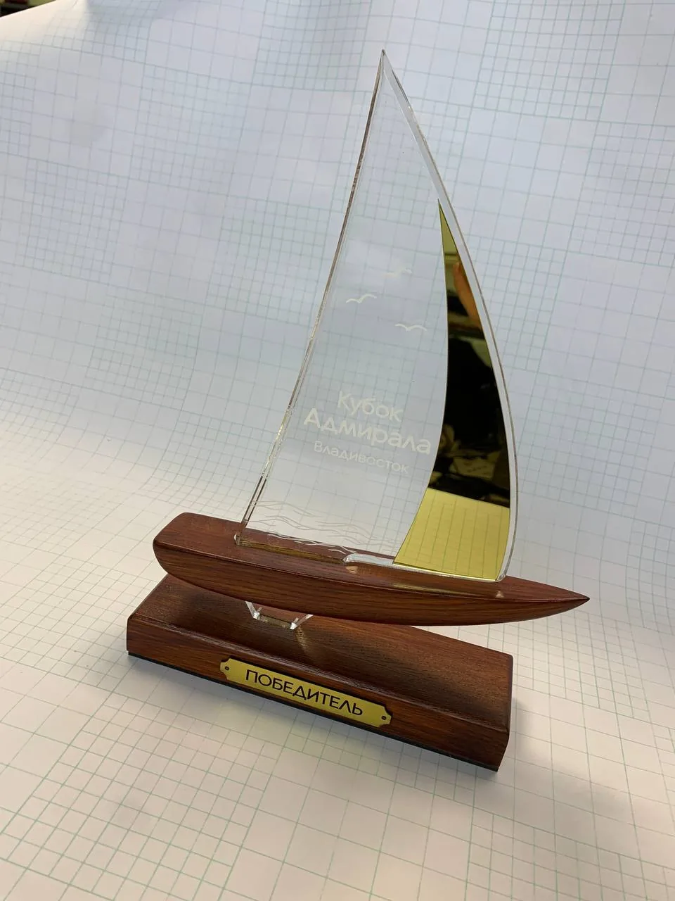

← Все награды
Наградная продукция
Награды для регаты
Парус как форма награды. Серия для гонки памяти Владимира Высоцкого: прозрачный силуэт, золотистый акцент и основание в форме лодки.
Ясень и оргстеклоУФ-печатьШильды с гравировкой

01 / Наградная продукция
Форма и материал связаны с событием
Тонированный маслом ясень сочетается с оргстеклом, на котором выполнены фрезерованные и отполированные огнём фаски и прямая полноцветная УФ-печать. Шильды изготовлены из двухслойного пластика для гравировки.


От идеи до готового объекта
Есть похожая задача?
Расскажите о вашем проекте — обсудим оформление, детали и реализацию.